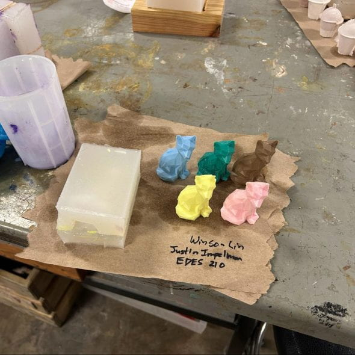
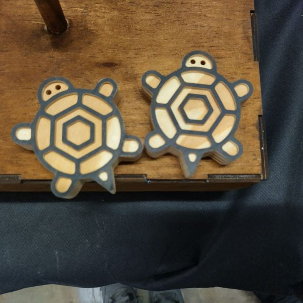
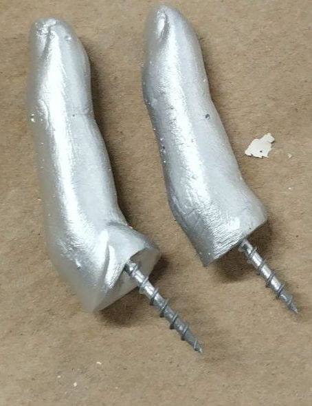
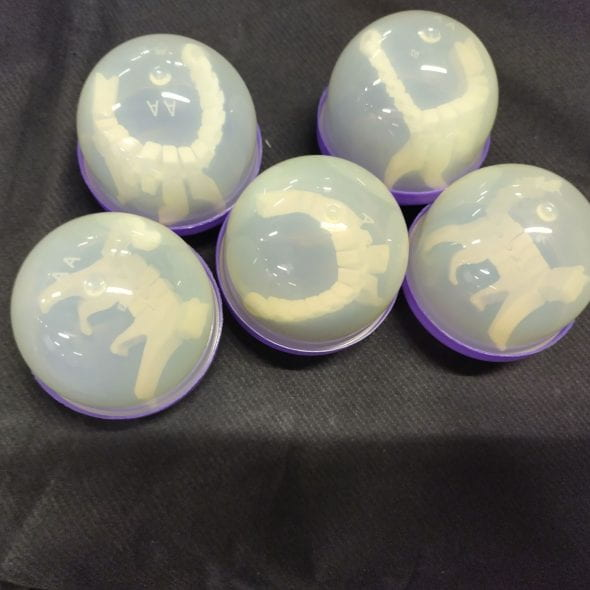
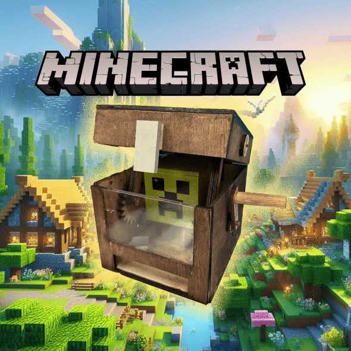
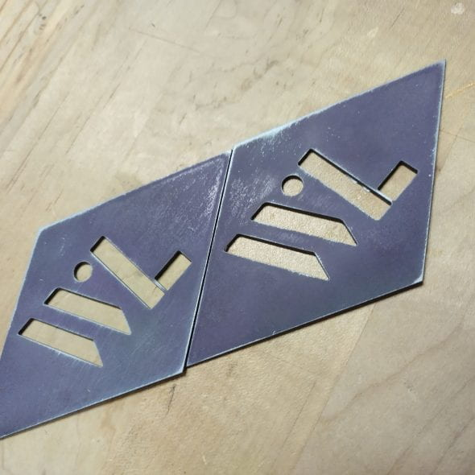
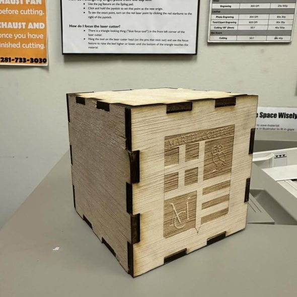
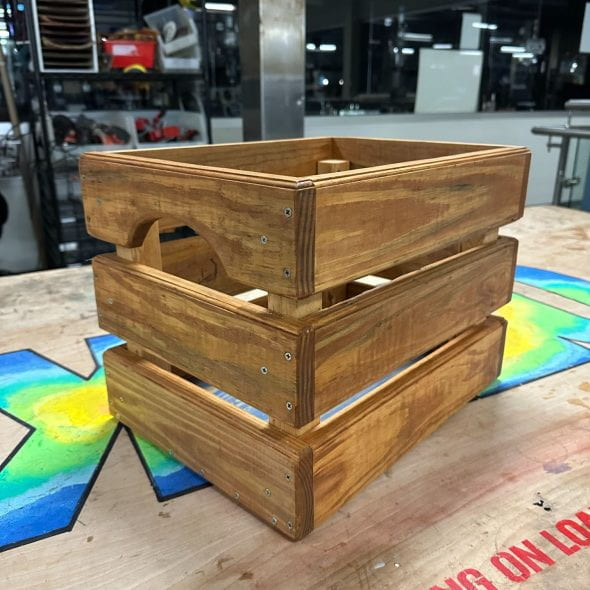
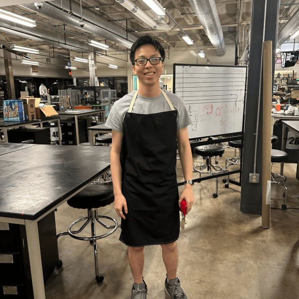

Justin and Winson's Fabulous Foxes
Complex molding and casting with silicone and polyurethane.
Read post ->Rice ENGI 210
A visual archive of hands-on fabrication work across casting, CNC, laser cutting, woodworking, sewing, and rapid prototyping. These posts document projects I built as a student and the breadth of techniques I now support as a teaching assistant.
Working on the ENGI 210 teaching team has given me deep familiarity with the course's fabrication workflow, from early concepting and CAD to shop execution and finish work. The posts below show that range through individual builds across different tools, materials, and constraints.

Complex molding and casting with silicone and polyurethane.
Read post ->
Routing wood for a fun minimalistic CNC project.
Read post ->
Molding and casting with alginate and Rockite.
Read post ->
3D printing within size constraints to make durable, flexible keychains.
Read post ->
Designing and building a complex mechanism using 2D fabrication techniques.
Read post ->
Metal cutting, cleanup, and finishing for a rustic diamond piece.
Read post ->
Laser cutting and press-fit joints for a precise box build.
Read post ->
Woodworking and assembly with attention to functionality and finish.
Read post ->
Patterning and sewing a wearable apron for messy work in the shop.
Read post ->